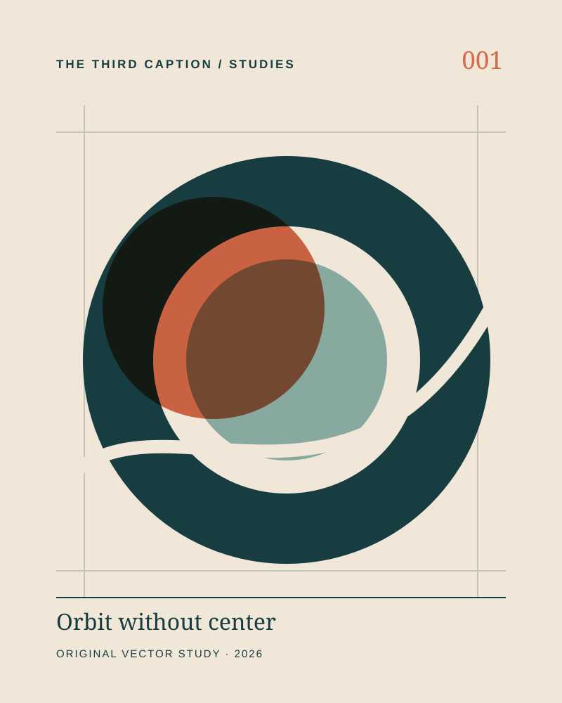

Read the source label
This is an original SVG composition built from authored geometric paths, colors and typography for this gallery. It is not a painting, a photograph, or someone else's submitted artwork.
A label can clarify the process without making your first impression invalid.